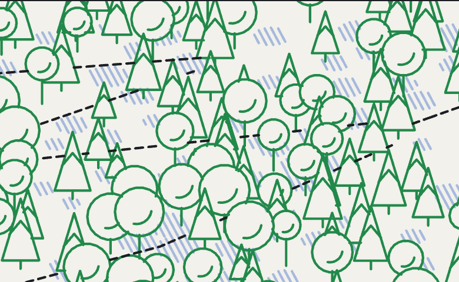
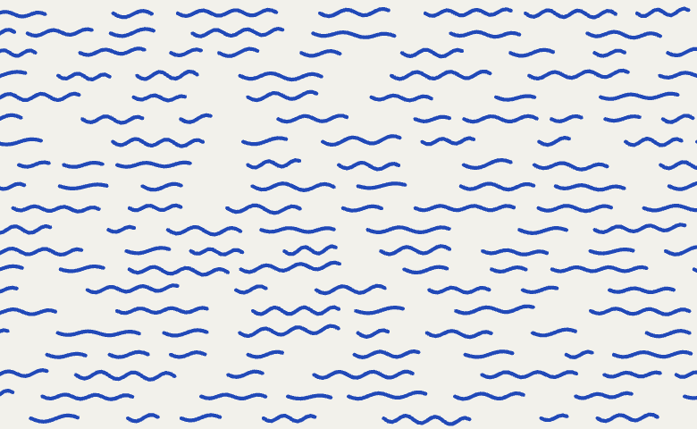
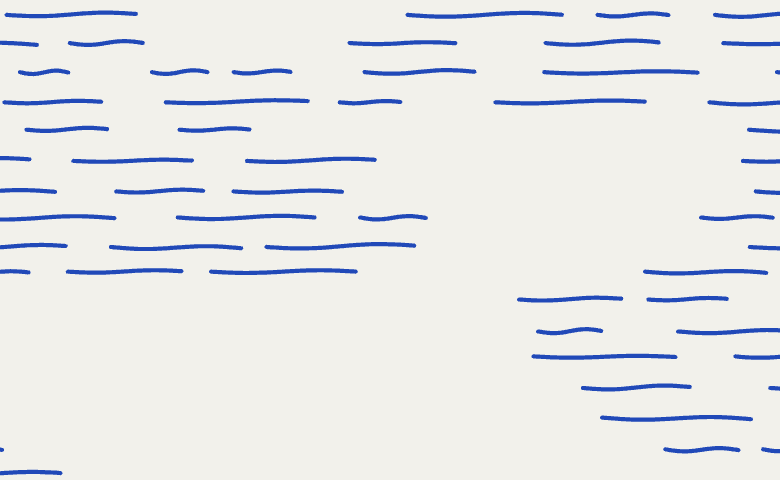
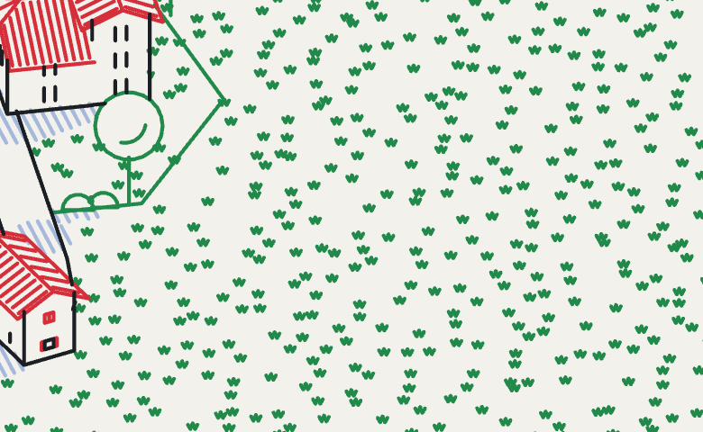
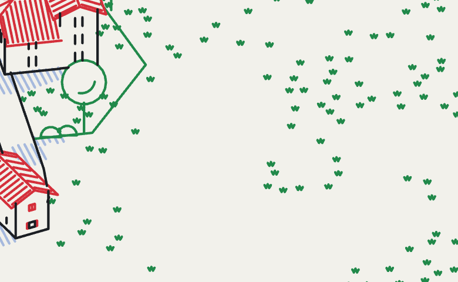

15 November 2026 · Original review · Round 1
This round gives grass, woods and water a quieter rhythm. Grass tufts form soft patches, with lawns sparser than meadows. Inferred park and woodland trees form groves and openings while keeping fuller boundaries. The grouping stays fixed to the map when panning. Tree silhouettes are unchanged.
Open water uses longer, flatter ripples in loose bands with empty areas between them. Ripples stop 1.5 pen widths inside banks; existing boat, wake and bridge exclusions remain. Water patterns follow the sheet rather than representing currents. Pool ripples, marsh marks and sand stipple are unchanged.





Four places at two scales, Detail 1 and a 0.35 mm pen, optional OSM tags off. Plotting time is an estimate. Waste is a diagnostic, not an artistic score; Hallstatt at 1:1000 has slightly higher proportional waste after removing much of its clean water texture, despite fewer strokes and less ink overall.
| Sheet | Waste before → after | Estimated time change |
|---|---|---|
| Mollis 1:1000 | 7.2% → 7.0% | -9.7% |
| Mollis 1:4000 | 16.1% → 15.1% | -15.7% |
| Hallstatt 1:1000 | 5.2% → 5.5% | -19.9% |
| Hallstatt 1:4000 | 20.5% → 19.3% | -37.1% |
| Amsterdam 1:1000 | 6.8% → 6.8% | -3.8% |
| Amsterdam 1:4000 | 15.5% → 15.5% | -1.2% |
| Trubschachen 1:1000 | 6.1% → 6.0% | -11.2% |
| Trubschachen 1:4000 | 19.5% → 18.6% | -26.9% |
Before lab report · After lab report (local generated files)
Inspected all 12 regenerated golden sheets, eight LOD whole sheets and representative enlarged crops, including targeted grass, water and woodland comparisons above. Golden changes include fewer inferred trees and the resulting changes in visible paths, buildings and shadows. Building classification and other object counts remain unchanged. The broad-pen monochrome, portrait, title and per-layer-detail sheets are included in the goldens.
Regression checks cover continuity and deterministic variation of density patches. The full suite also checks panning stability, settings gates and valid linework. No physical pen proofs were inspected, and this round does not certify every seed, bearing or all 29 presets after the changes. Dense park hatching, individual tree silhouettes and façade texture still need later work.